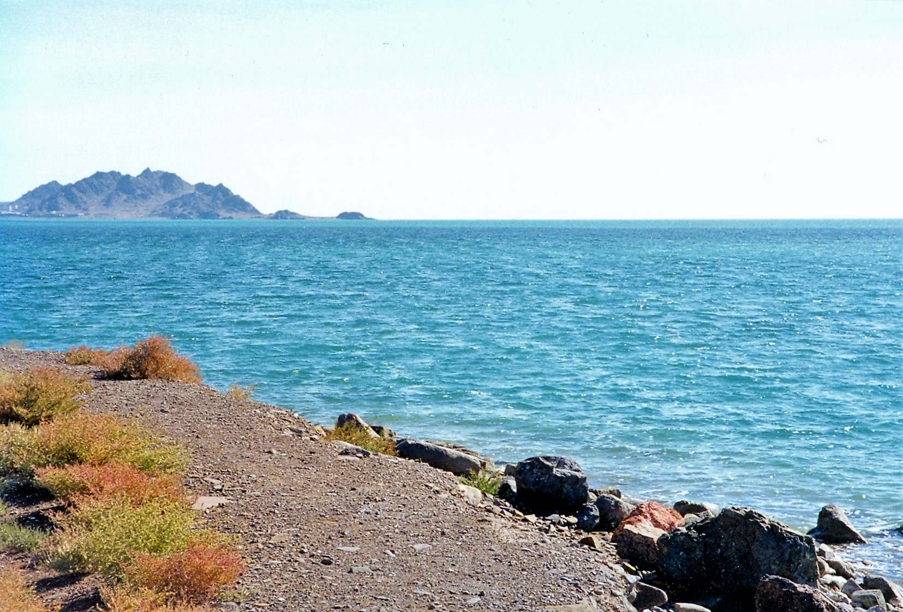
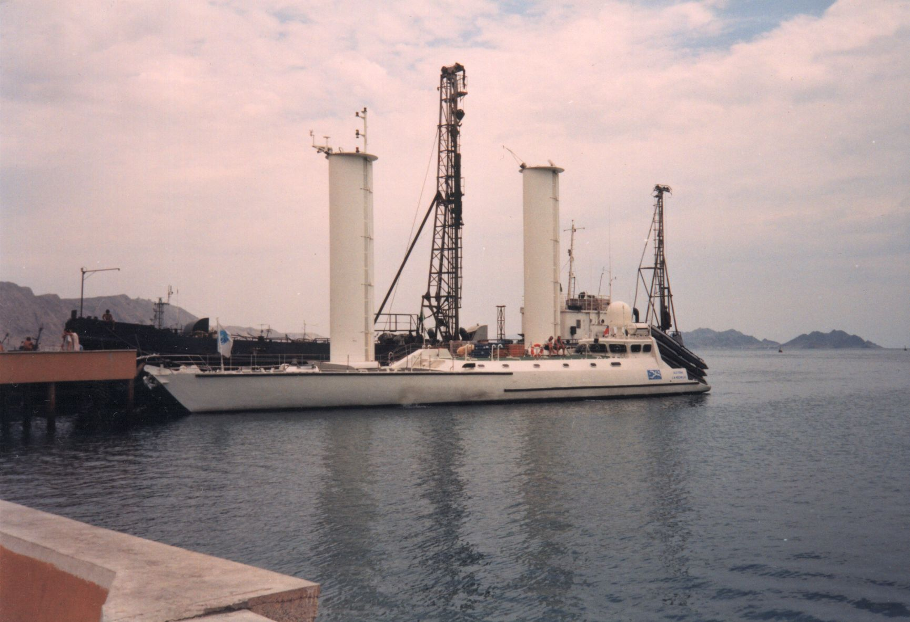

Türkmenbaşy
Ikinjisi Krasnowodsk (Rusça: Красноводск), Türkmenistanyň Balkan welaýatynda, Hazar deňziniň Türkmenbaşy aýlagynda ýerleşýän şäherdir.
Krasnowodsk
1869-njy ýylda ruslar ikinji gezek çozdular. Bu şäherçäni eýelänlerinden soň, öz galasyna Krasnowodsk (Gyzyl suw) diýip at berdiler.
Krasnowodsk galasy
Imperial Russiýanyň Hywa we Buhara, şeýle hem ýarym çarwa türkmen taýpalaryna garşy operasiýa bazasy bolup hyzmat edipdir.
1920-nji ýylyň fewral aýynda Gyzyl Goşuna tabyn boldy. 1939-njy ýylyň 21-nji noýabrynda Krasnowodskdaky dolandyryş merkezi bilen Krasnowodsk welaýaty döredildi. Welaýat birnäçe gezek ýatyryldy we dikeldildi (1947-nji ýylyň 23-nji ýanwary ýatyryldy we 1952-nji ýylyň 4-nji aprelinde dikeldildi; 1955-nji ýylyň 9-njy dekabry ýatyryldy. 1973-nji ýylyň 27-nji dekabry dikeldildi; dikeldildi; 1988-nji ýylyň 25-nji awgusty ýok edildi


Demir ýol menzili
1895-nji ýylda gurulan Demir ýol menzili Türkmendemirýollary tarapyndan dolandyrylýar.

Hazar deňzi
Hazar deňzi, dünýädäki iň uly içki suw howdany bolup, köplenç dünýäniň iň uly köli ýa-da doly hukukly deňiz hökmünde häsiýetlendirilýär.

Türkmenbaşy portundaky gadymy gämileri
2013-nji ýylda portda "Çarlak" ýolagçy katamarany guruldy. Bu portuň taryhynda bu derejedäki ilkinji gämi gurluşyk taslamasydy.